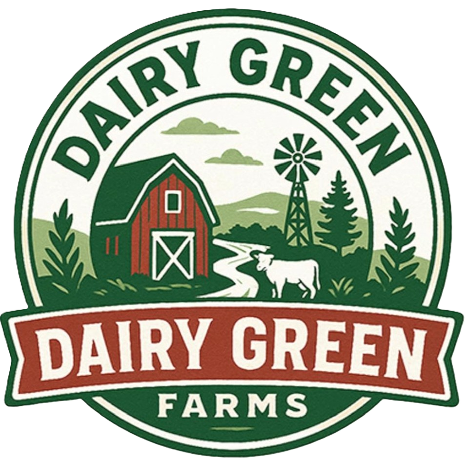
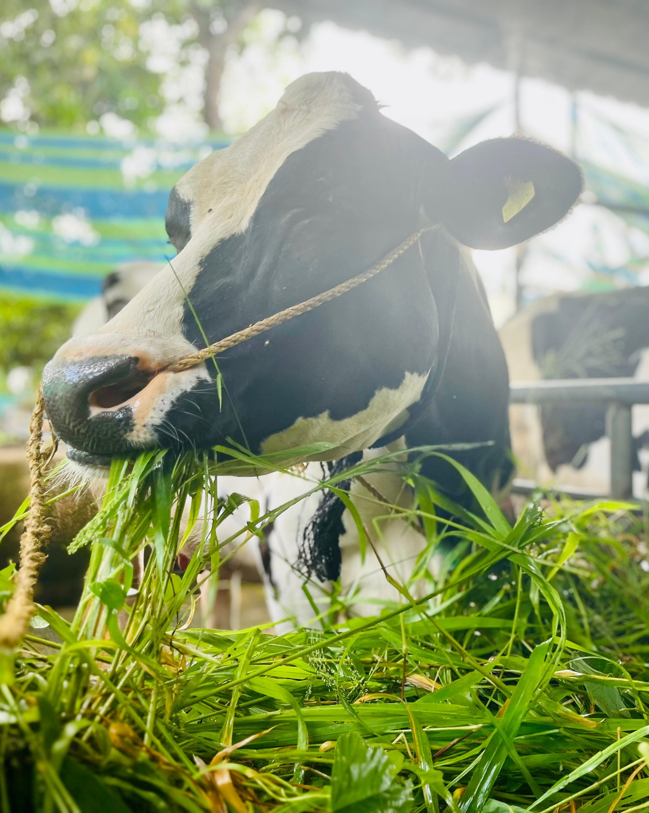
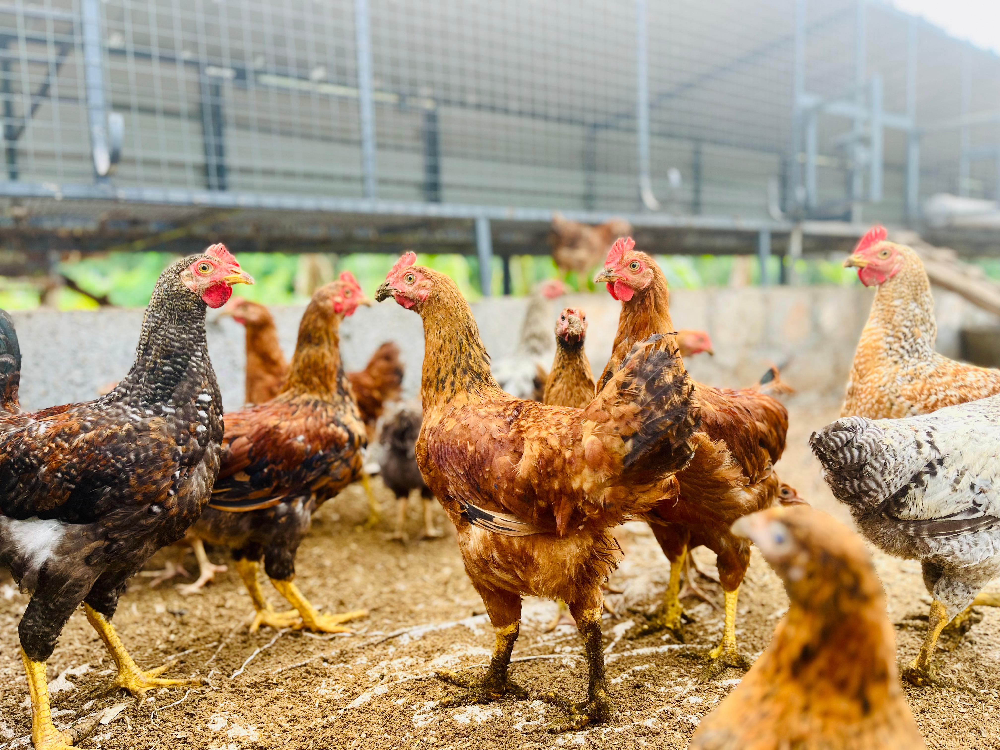
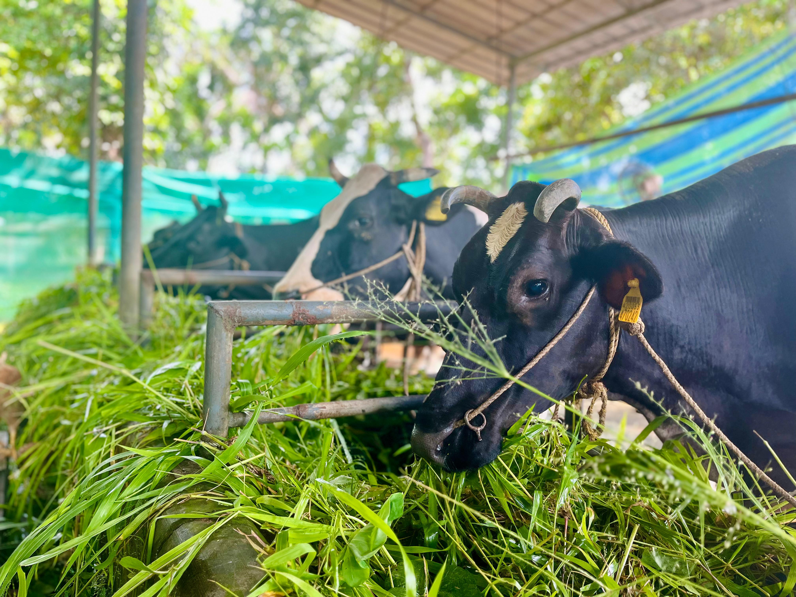
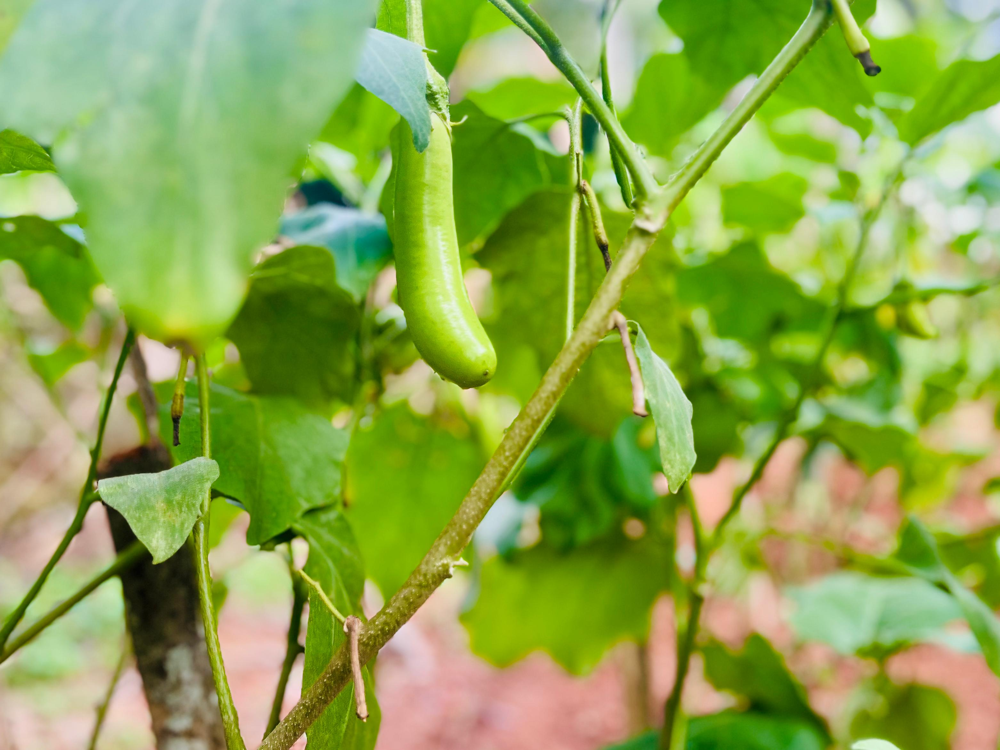
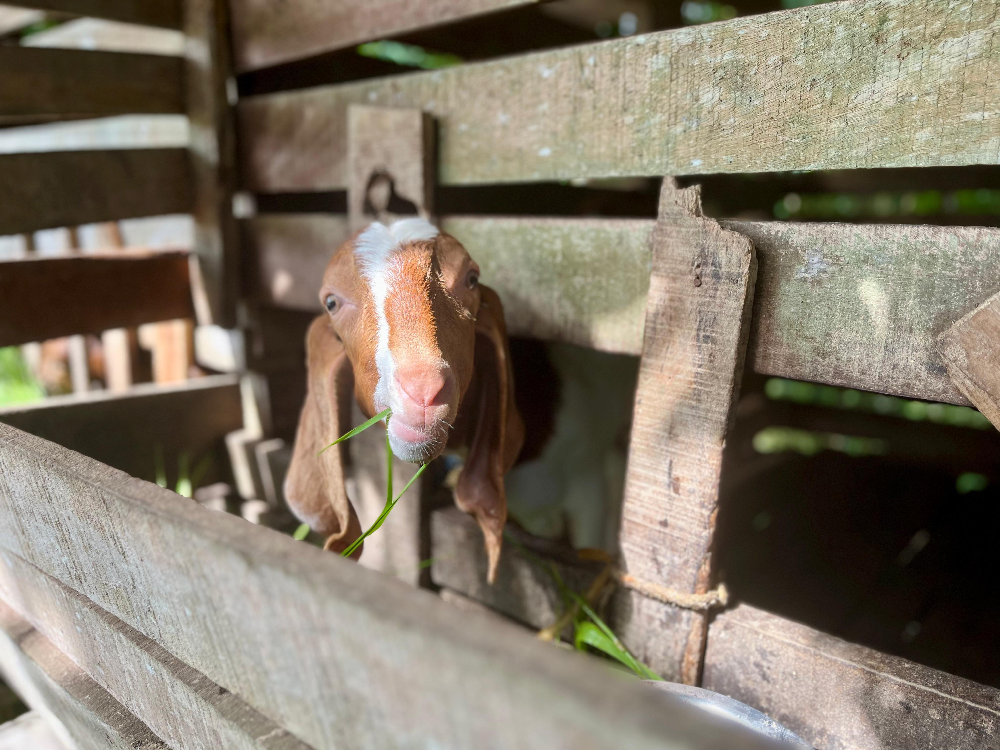
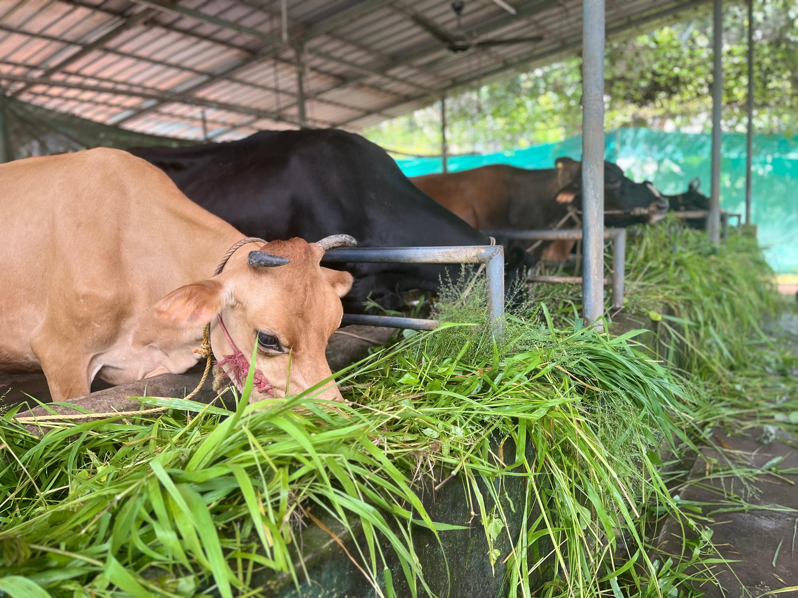
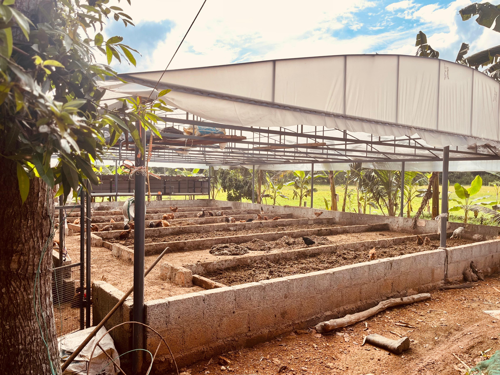

Nurturing tradition, harvesting health. From our soil to your soul. Pure dairy, eggs, and organic goodness straight from Chottanikkara, Kerala.
Every product is a promise: grown, harvested, and delivered with the same care we give our family.
Pure farm milk, aromatic traditional ghee, and probiotic-rich natural curd. Straight from our cows to your table.
Free-range hen and duck eggs from happy birds who roam freely, forage naturally, and live without stress or cages.
Rich, natural soil amendments: dried cow dung, vermicompost, and biogas slurry that transform your garden into a paradise.
Rotation-grown tomatoes, brinjals, beans and more, nurtured in soil enriched only by our own farm's organic goodness.

Mr. Joji Joseph started Dairy Green Farms in 2000. Not as a business venture, but as a response to a growing crisis: the declining quality of food reaching families across Kerala.
Watching chemical-laced produce and adulterated dairy products become the norm, he made a simple but powerful decision: to grow food the way it was always meant to be grown.
"To provide pure, honest, chemical-free farm products to the community, because every family deserves food that truly nourishes."
Our day begins before dawn. The gentle sounds of the herd, the warmth of the milking stalls, and the quiet satisfaction of honest work.
Nothing goes to waste. Cow dung becomes vermicompost, slurry feeds the soil, and the land gives back tenfold. A perfect, sacred loop.
Nestled in the green heart of Chottanikkara, our farm is more than a place. It's a promise, kept fresh every single day.






We farm in harmony with nature: no chemicals, no shortcuts. Every practice is chosen to heal the earth, not harm it.
We treat every customer like family. The food we grow is the same food we feed our own children: pure, honest, and full of love.
No additives, no adulterants, no compromises. What you see is exactly what you get. Straight from the farm, nothing more, nothing less.
Reach out to place an order, ask about our products, or just say hello. We're a family farm and we love hearing from you.